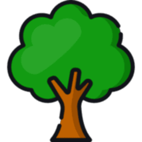
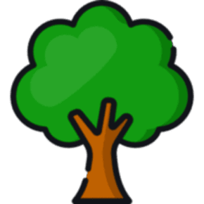
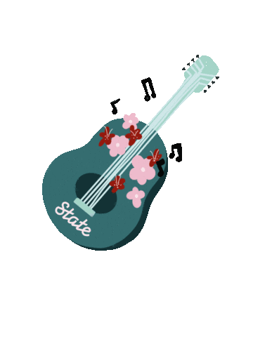

I'm Min Khant Thaw.
An amateur of programming
 


Greetings.
I'm Min Khant Thaw. A student of NIEC. Now, I'm gonna be Secondary - 2. Indie's my favorite music genre as well as Lofi. I like relaxing music!
My Skills.

Ukulele!
intermediate level of playing Ukulele. I bought my first ukulele in August 2021. Another professtional ukulele in December 2022. The first uke is made of Carbon Fibre. The second uke is made of pure mahogany wood.

Achievements!
- I passed PET with Grade - A.
- Got the Outstanding award in MATHS in Secondary - 1.
- WINNER of Science Exhabition.
Get In Touch
Feel Free To Contact Me
"I HAVE NO SPECIAL TALENT. I AM ONLY PASSIONATLY CURIOUS" - Einstein
CONTACT ME© 2023 Min Khant Thaw @ Thaw